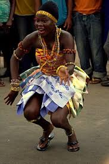
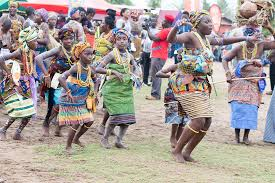
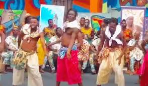
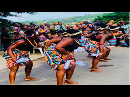

Local Ghanaian dances
Ghanaian dances are not merely performances; they are expressions of the country’s culture , tying together elements of music, storytelling, and community bonding. Each dance embodies its own narrative, reflecting the customs, beliefs, and experiences of the people.
Adowa
One of the most iconic Ghanaian dances is Adowa, loved for its gracefulness and significance in various ceremonies. Originating from the Ashanti tribe, Adowa is often performed during festivals, weddings, and funerals. Its movements are characterized by rhythmic swaying, hand gestures, and intricate footwork, accompanied by the melodic tunes of traditional instruments such as the talking drum and the fontomfrom (a type of drum).
Adowa serves as a symbol of celebration and remembrance, honoring ancestors and commemorating important milestones in Ghanaian society. Through its graceful movements and rhythms, Adowa connects generations, preserving cultural heritage and fostering a sense of unity among the people.
Kpanlogo
In contrast to the solemnity of Adowa, Kpanlogo embodies the spirit of liberation and joy. Originating from the Ga tribe along the coast of Ghana, Kpanlogo emerged as a form of expression during the country’s independence movement in the 1960s. Its lively beats and exuberant movements reflect the resilience and optimism of the Ghanaian people.
Kpanlogo is characterized by energetic drumming, accompanied by synchronized movements such as hip-shaking, foot-stomping, and intricate handclaps. It is often performed during social gatherings, street festivals, and youth gatherings, serving as a platform for self-expression and cultural exchange.
Borborbor
Native to the Volta Region of Ghana, Borborbor is a dance deeply rooted in spirituality and community healing. Traditionally performed by the Ewe people, Borborbor is associated with rituals aimed at invoking ancestral spirits for guidance and protection.
The dance is characterized by rhythmic movements, circular formations, and call-and-response singing, accompanied by traditional instruments such as the gome (a type of drum) and the atsimevu (a large drum). Borborbor is not merely a performance but a communal experience, bringing together individuals to celebrate life, heal wounds, and strengthen social bonds.



